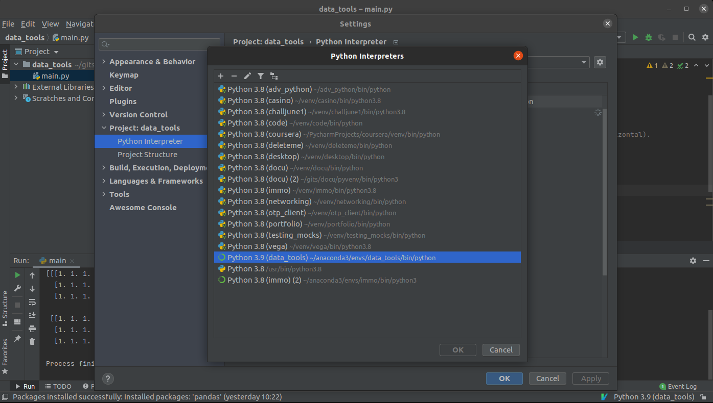

pycharm you¶
agenda¶
find action
cool shortcuts
configuring python interpreter
debugging @work
meditation
installing plugins
find action¶
cool kids on the block¶
in-place refactoring¶
rename? -> alt + enter
care to comment?¶
(un)comment: ctrl + /
shakespeare¶
todo or not todo: # todo: gonna forget this
tdd w00t¶
fire up tests: ctrl + shift + t
import hell¶
optimize imports: ctrl + alt + o
F* strings¶
print(“some big var”) -> curly enter